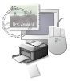

These icons and resources are only for use by people writing applications which are designed to become part of the GNUstep environment. Any other use of these icons is not allowed. This is intended to preserve the identity of the GNUstep Application Distribution in icon form.
Please respect this wish of the artists who put their energy into making GNUstep an appealing unique environment.
Programmers who would like to contribute to the GNUstep environment with one of their applications are encouraged to contact the designers or ask on the regular mailing list for icon support.
If you have questions or want to supply an icon or resource you have designed please contact me.
|
|
Applications' Icons |
| Filer and General Icons for Devices and Folders. | |
|
|
Filer and General Icons for Stored Documents. |
|
 |
The Dreaded Miscelaneous Category. |
| Contact Webmaster: webmasters@gnustep.org | ||||